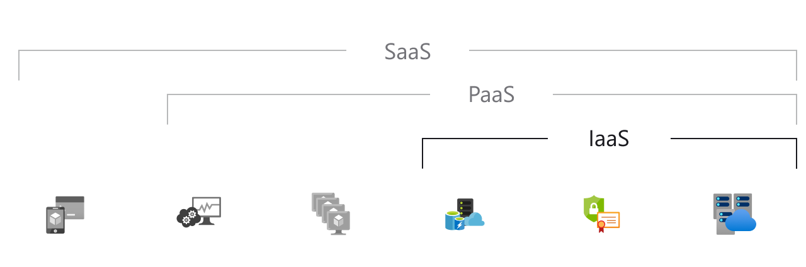

From Humble Beginnings
Cloud Computing should not be a mysterious term that scares away businesses looking to take advantage of the latest trends in technology for the best competitive edge. It is a system that can be more easily comprehended by breaking it down into two distinct parts known as the front end and back end which are connected via the internet. The front end usually consists of the client's computer or computer network as well as the application needed to access the cloud services. While the back end consists of an array of computers, servers and data storage systems that provide the infrastructure and in some cases platforms and software. With cloud computing, you are receiving specific computing services your business needs from service providers such as Amazon Web Services or Microsoft Azure who have already invested extensively in a vast and robust IT infrastructure that is capable of meeting those needs over the "cloud" or internet.
In fact, this concept has already existed for quite some time in various stages. In 1963, the Defense Advanced Research Projects Agency (DARPA) funded a project to deliver a technology that would allow simultaneous use of early computer systems in what today would be consider a very rudimentary implementation of a cloud. This idea was first described as "Virtualization."
Following on the heels of this endeavor in 1969 was the successful creation of the Advanced Research Projects Agency Network (ARPNET), the very first primitive version of the internet which would eventually give rise to the vast and ubiquitous network of connected devices and service providers we heavily rely on today.
In the 1970s, the idea of Virtualization evolved from describing the simple concept of allowing a few simultaneous users to access a physical computer system to describing the creation of virtual machines which were computer images or files that behaved like physical computers and were accessible over networks by many users at the same time. By the early 1990s, Virtualization had grown in popularity which in turn gradually lead to the construction of IT infrastructure necessary for the development of modern-day Cloud Computing.
By the late 1990s and early 2000s, Cloud Computing had expanded into the full blown realization of allowing companies to provide robust services such as IT infrastructure, platforms and software over the internet to other companies (Foote, "A Brief History").
Different Types of Cloud Service
There are more than one type of service from which businesses can benefit through Cloud Computing, each one offering increasingly more resources:
Infrastructure as a service (IaaS) This is the most basic level of service a business can purchase. It allows you to rent IT infrastructure such as servers, virtual machines, storage, networks and operating systems from providers in a subscription-based plan.
Platform as a service (PaaS) In addition to IT infrastructure, this level of service also provides a variety of platform environments ideal for companies that need to develop, test, and manage software applications without having to invest heavily in their own hardware and infrastructure.
Software as a service (SaaS) As the most comprehensive level of cloud computing service, this provides the client with specific software or bundles of software as well as the supporting infrastructure, all accessible over the internet, usually via a web browser (4).